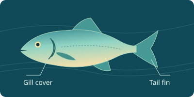

How Fish Work
A fish opens its mouth, fans its gill covers, and flicks its tail. Follow three things you usually can’t see: water crossing a membrane, oxygen entering blood, and water pushed behind a swimmer.

1. Which way will water move?
Imagine a thin membrane that lets water through but holds salt back. Water crosses both ways. More water moves toward the saltier side overall. That net movement is osmosis.
Fish → surrounding water. A marine bony fish loses water, drinks seawater, and releases excess salt through special gill cells.
Predict what changes in a river
A freshwater bony fish gains water. Its kidneys release lots of dilute urine, and its gills take up salts. Salmon adjust these systems when they migrate between river and sea.
In the wild. A young Atlantic salmon prepares for the ocean before it leaves its river. During this change, called smoltification, its gills adjust how they handle salt. NOAA Fisheries · Atlantic salmon
2. Follow one breath through a gill
Water enters the mouth, passes over gill filaments, and exits beneath the gill covers. Each filament carries thin folds packed with tiny blood vessels. Dissolved oxygen crosses the thin wall into blood by diffusion.
Gold dots trace oxygen crossing one gill fold.
These model numbers show relative oxygen levels at three places along one fold. Pick any column. Which side has more oxygen?
Trace the blood from right to left
Blood enters at 25 and passes water at 40. Farther left, the water still has more oxygen than the blood beside it. Opposite flow keeps oxygen moving into blood along the whole fold. This is countercurrent exchange.
3. Slow down a tail beat
Viewed from above, a wave of bending travels toward the tail. The tail sweeps sideways and angles against the water, pushing some water backward. The water pushes the fish forward.
Watch the tip lag behind the base. Many fish use paired fins to steer or brake while the tail supplies thrust.
Reading a naturalist’s plate

Sherman Foote Denton, rainbow trout watercolor for New York State’s 1896 fisheries report. Public domain in the United States. Original plate and rights record

Engineering lab · Test a robot tail
Can changing tail stiffness make the same robot swim farther?
- Mount a battery-powered servo above the splash line on a foam float. Attach a strip to the servo arm so its fin hangs in the water. Keep the controller and battery dry.
- Make two fins with the same outline. Stiffen one with a strip of tape. Program the servo to alternate between 60° and 120° every half second.
- Start each run at the same mark in still water. Measure forward distance after ten seconds. Run each fin three times and compare the averages.
Which fin bent most? Did it travel farthest? Use your measurements to defend one change for the next prototype.
Continue to the Biomimicry design lab →